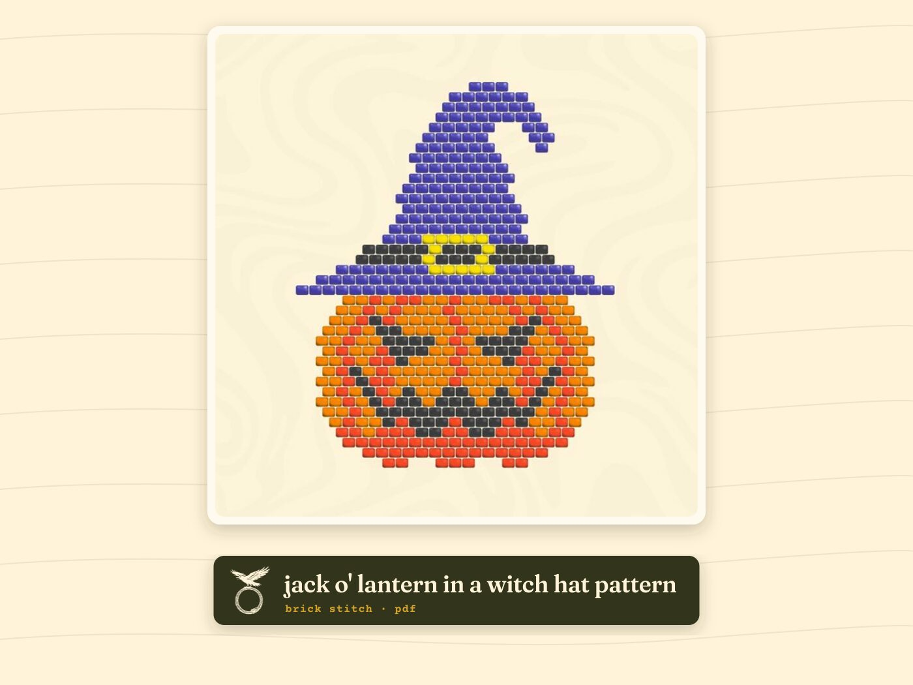

patterns / brick stitch

jack o' lantern in a witch hat
brick stitch beading pattern · pdf
a jack o' lantern wearing a witch hat. both halloween classics at once.
| stitch | brick stitch |
|---|---|
| beads | size 11/0 seed beads |
| format | pdf, instant download |
| price | $2.99 |
what's inside
- bead diagram
- word chart
- color legend
sold through samsara digitals, our pattern shop on etsy. you can sell what you make from it.